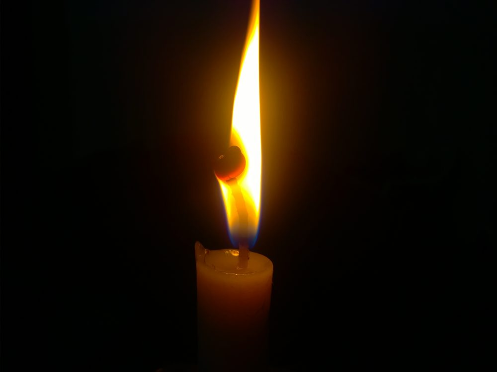

🧭 災難生存 · 實用小知識
🔦 長期停電、停水的生活對策
戰爭、地震或強颱最常見的後果，就是長時間停電與停水同時發生。真正讓人手忙腳亂的往往不是缺乏英雄式的裝備，而是「天黑了看不見」「冰箱的肉壞了」「馬桶不能沖」這些日常。這篇把停電停水期間的照明、食物、保暖、如廁與衛生一次講清楚，讓你在黑暗中也能維持基本生活與健康。

▲ 停電時的基本照明。但蠟燭有火災風險，頭燈與 LED 營燈更安全。圖片：ViajeroExtraviado，Wikimedia Commons，CC0 公有領域。
照明：先解決「看得見」
停電第一個要解決的是光。優先順序建議：
- 頭燈（第一名）：能空出雙手做事，是停電時最實用的照明。每人一顆。
- 手電筒、LED 營燈：營燈能提供整個房間的環境光，適合放在客廳或餐桌。
- 備用電池：分不同規格多備一些，和照明工具放在一起、固定位置。
- 蠟燭是最後手段：有明火就有火災與一氧化碳風險，尤其家中有孩童、寵物時更要小心，睡前務必熄滅。
把一支手電筒或頭燈固定放在床邊與玄關，停電的瞬間才拿得到。手機手電筒可應急，但很耗電——電力在停電時是稀缺資源，別浪費在照明上。
冰箱食物：能撐多久、什麼時候該丟
停電後最務實的原則是：盡量不要開冰箱門，把冷氣留在裡面。根據食品安全通則，門保持關閉時可維持的安全時間如下：
| 狀況 | 可維持安全的時間 | 處置原則 |
|---|
| 冷藏室（門不開） | 約 4 小時 | 超過後易腐食物視情況丟棄 |
| 冷凍庫（裝滿、門不開） | 約 48 小時 | 仍有冰晶可安全再冷凍 |
| 冷凍庫（半滿） | 約 24 小時 | 同上 |
| 易腐食物退冰且 >5°C 逾 2 小時 | — | 直接丟棄，勿試吃或憑氣味判斷 |
實務建議：停電時先吃冷藏、再吃冷凍、最後才動常溫儲備；把冷凍庫塞滿（沒東西就放保特瓶裝水結冰），既延長保冷、結的冰又能當緊急飲水。判斷食物是否安全時，「有疑慮就丟掉」永遠比冒險吃壞肚子划算——停電停水時拉肚子會讓缺水處境雪上加霜。
沒有自來水：如廁與衛生
停水時，「上廁所」是最容易被忽略、卻最影響健康與士氣的問題。
- 沖馬桶：水箱的水可沖一次。之後把預存的清水或回收水（洗澡水、洗菜水、雨水）直接倒入馬桶盆，一次約 6–8 公升即可沖走。
- 完全無水時：在馬桶內套雙層垃圾袋，每次使用後撒入貓砂、木屑或撕碎的報紙吸附水分與異味，用完綁緊、集中丟棄。這是災難收容所常用的「應急便袋」做法。
- 個人清潔：濕紙巾、乾洗手、免沖泡沫洗手液可大幅節省用水；女性生理用品、尿布要備足。
- 垃圾與污物：分開存放、盡快清運，避免孳生蚊蟲與傳染病。
延伸閱讀：關於飲用水的取得與淨化，見〈如何把水變乾淨、能安全飲用〉；儲備量規劃見〈居家儲備：水、糧、藥要存多少〉。
保暖與消暑：沒有空調的溫度管理
- 冬天保暖：多層次穿衣比單件厚衣更保暖；用睡袋、毛毯、暖暖包；把家人集中在同一個房間共享體溫，關上該房間門窗減少熱散失。
- 夏天消暑：白天拉上窗簾遮陽、夜晚開窗對流；多喝水、用濕毛巾降溫、避免正午時段勞動，慎防中暑（尤其長者與幼兒）。
- 絕不可在密閉室內用木炭、燒烤爐或發電機取暖——見下方安全警告。
通訊與資訊：停電也要掌握狀況
- 收音機（電池式或手搖式）是停電時最可靠的資訊來源，能收聽官方廣播與撤離指示。
- 省電優先：手機開省電模式、降低亮度、關閉背景 App；用簡訊取代通話（更省電、壅塞時更易送達）。
- 行動電源平時充滿、準備車充與太陽能板；一支手機留作對外聯絡，其餘關機備用。
更完整的斷訊應對，見〈斷網、斷訊時如何取得資訊與聯絡〉。
⚠ 致命警告：一氧化碳中毒
木炭、燒烤爐、卡式爐長時間密閉使用、汽油發電機，都會產生無色無味的一氧化碳，可在室內致命。發電機務必放戶外、遠離門窗；室內煮食務必開窗通風；強烈建議加裝一氧化碳警報器。出現頭痛、頭暈、噁心、想睡等症狀，立即到戶外呼吸新鮮空氣並就醫。
💡 停電來臨時的第一輪動作
- 拿出頭燈／手電筒，確認家人安全
- 冰箱、冷凍庫「先別開」，並開始把浴缸、水桶裝滿水
- 手機轉省電模式，開收音機聽官方訊息
- 關閉並拔除敏感電器插頭，避免復電瞬間突波損壞
停電停水前，先做這些準備
大多數的停電停水，事前都有徵兆（颱風警報、情勢升溫、限電通知）。收到警訊到真正斷供之間的這段時間，做好以下準備，能讓後續的日子輕鬆非常多：
- 先囤水：把浴缸、水桶、鍋子、寶特瓶全部裝滿。飲用水另外用乾淨容器分裝，並和生活用水（沖廁、清潔）分開標示，避免混用。
- 把電充飽：手機、行動電源、頭燈電池、筆電全部充到滿，這些將是斷電後僅有的電力。
- 冰箱預冷：把溫度調低、減少開關門，並在冷凍庫塞入裝水的寶特瓶結冰，既延長保冷、融冰又能當備用飲水。
- 領現金、加滿油：停電時提款機與刷卡機無法運作，加油站也可能停擺，手邊要有小額現金（含零錢）與滿油的油箱。
- 把工具集中：頭燈、收音機、電池、急救包、瓦斯罐放在固定、好拿的位置，黑暗中也能摸到。
更完整的品項與數量，見〈居家儲備：水、糧、藥要存多少〉與〈緊急避難包完整清單〉。
別忘了特殊需求的家人
停電停水對某些人是「不方便」，對某些人卻可能是「危及生命」，務必事先規劃：
- 需要電力的醫療設備（呼吸器、氧氣機、居家透析、冰藏胰島素等）：準備不斷電系統或備用電源，並事先向電力公司登記、與醫療院所確認停電時的應變管道。
- 嬰幼兒：奶粉、副食品、尿布、保暖衣物要充足；沖泡奶粉的乾淨水源要先備妥。
- 長者與慢性病患：慢性病藥至少備足數週；留意停電時的溫度（長者對冷熱調節較弱，慎防失溫與中暑）。
- 寵物：飼料、飲水、便盆耗材也要一起準備。
常見問答 FAQ
Q1. 停電後冰箱食物可以放多久？
門不開的情況下，冷藏約 4 小時、裝滿的冷凍庫約 48 小時（半滿約 24 小時）。易腐食物退冰且高於 5°C 逾 2 小時就該丟，別靠氣味判斷。
Q2. 室內可以用木炭或發電機取暖煮食嗎？
不行。會產生致命的一氧化碳。發電機放戶外遠離門窗，室內煮食要通風，並裝一氧化碳警報器。
Q3. 停水時廁所怎麼辦？
先用水箱水沖一次，之後用回收水倒入沖走（一次 6–8 公升）；完全無水就套雙層垃圾袋＋貓砂吸附，用後綁緊丟棄。
Q4. 怎麼延長手機續航？
省電模式、降亮度、關背景 App、以簡訊取代通話；平時備妥充滿的行動電源、車充與太陽能板。
Q5. 復電時要注意什麼？
復電瞬間可能有突波，敏感電器（電腦、電視）建議先拔插頭，待電力穩定再插回；也留意冰箱食物是否已不安全。
權威來源
※ 本文為一般防災參考，整理自台電、NCDR、疾管署等公開資訊，不能取代官方即時指示。食物安全有疑慮時以「丟棄」為原則；出現一氧化碳中毒症狀請立即就醫。